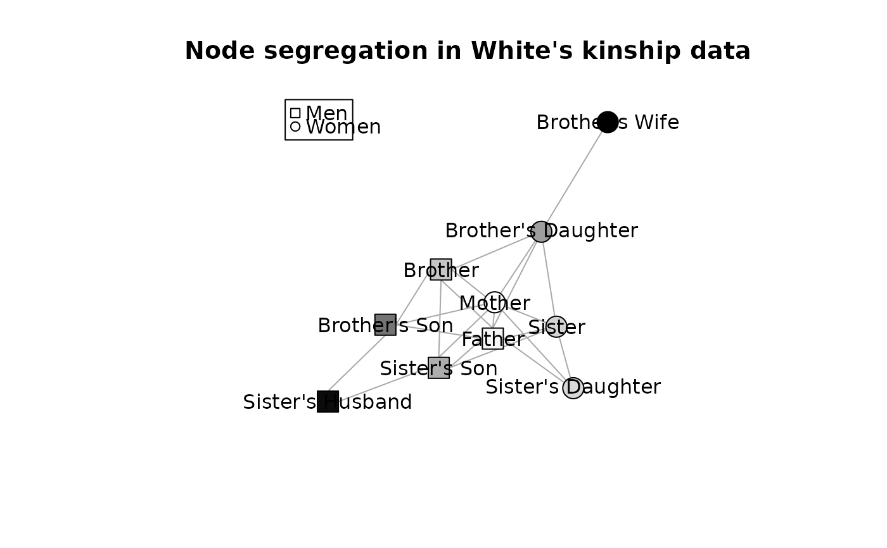
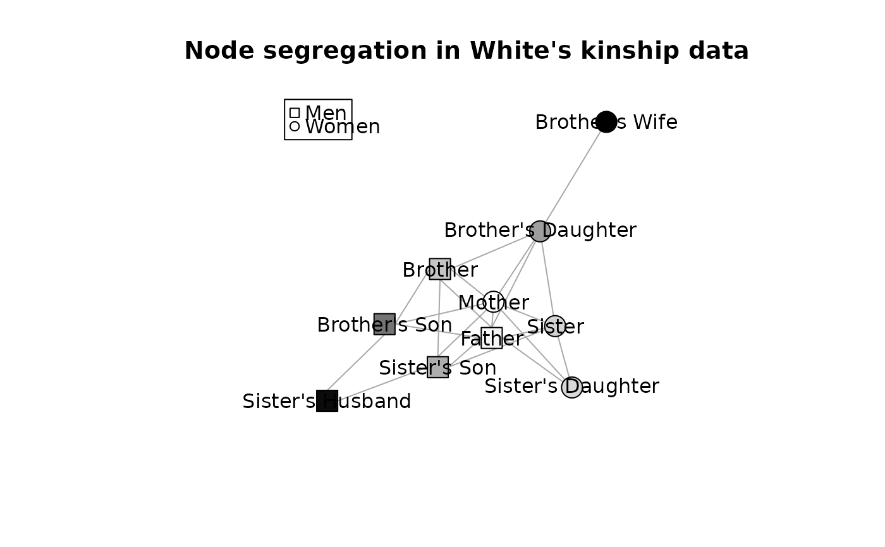

These functions implement Spectral Segregation Index as proposed by Echenique & Fryer (2006). This index is a node-level measure of segregation in a given network.
ssi(g, vattr)Arguments
- g
object of class "igraph" representing a network
- vattr
character, name of the vertex attribute
Value
Named vector of individual level values of SSI. Names correspond to vertex
ids in g.
Details
For a full description and axiomatization see Echenique & Fryer (2006).
The network g is converted to adjacency matrix and normalized so that
all rows sum-up to 1.
The procedure essentially consists of creating a submatrix, say, \(B\) of
the adjacency matrix, say \(A\). This submatrix \(B\) contains only
vertices of the given type. It may be viewed as a type-homogeneous
subnetwork of A. This subnetwork is further decomposed into connected
components. Then, for every component, an eigenvalue decomposition is
applied. The value of the index for the component is simply the largest
eigenvalue, and the individual-level indices are obtained by distributing it
according to the corresponding eigenvector.
References
Echenique, F., & Fryer Jr, R. G. (2007). A measure of segregation based on social interactions. The Quarterly Journal of Economics, 122(2), 441-485.
Examples
if(requireNamespace("igraph", quietly = TRUE)) {
### artificial EF data
x <- ssi(EF3, "race")
x
# show it on picture
a <- igraph::V(EF3)$race
# rescale SSI values to use as shades of gray
k <- 1 - scale(x, center=min(x), scale=max(x) - min(x))
plot( EF3, layout=igraph::layout.fruchterman.reingold,
vertex.color= gray(k),
vertex.label.family="",
vertex.shape=c("circle", "square")[a],
vertex.label.color=gray( (1-k) > .4 )
)
### For White's kinship data
x <- ssi(WhiteKinship, "gender")
x
# plot it
a <- match(igraph::V(WhiteKinship)$gender, unique(igraph::V(WhiteKinship)$gender))
k <- 1 - scale(x, center=min(x), scale=max(x) - min(x))
set.seed(1234)
plot( WhiteKinship, layout=igraph::layout.fruchterman.reingold,
main="Node segregation in White's kinship data",
vertex.label.family="",
vertex.label=igraph::V(WhiteKinship)$name,
vertex.color= gray(k),
vertex.shape=c("circle", "csquare")[a],
vertex.label.color="black")
legend( "topleft", legend=c("Men", "Women"), pch=c(0,1), col=1)
}
 
